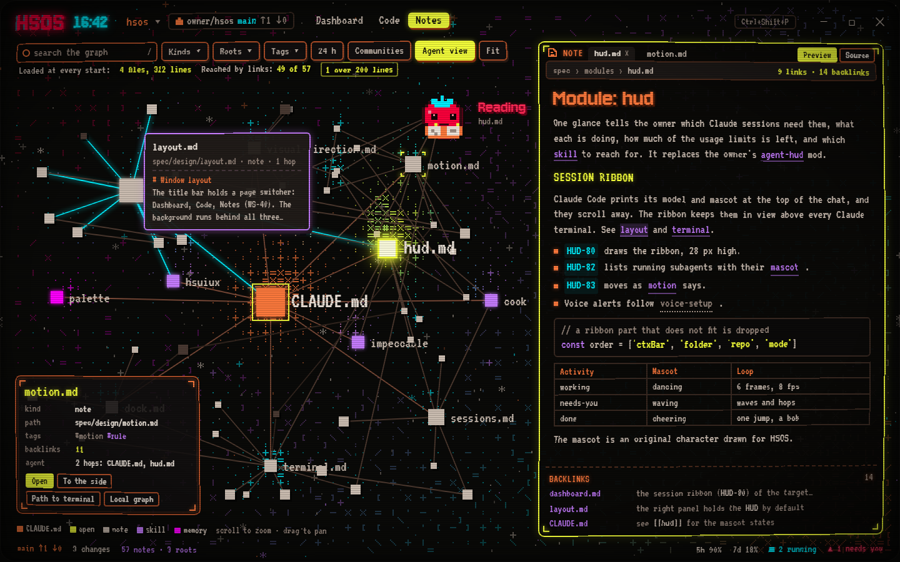
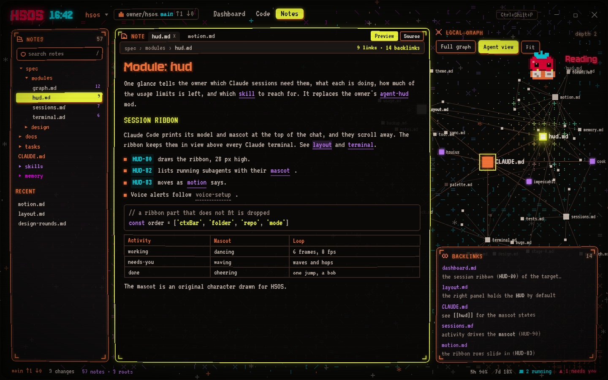
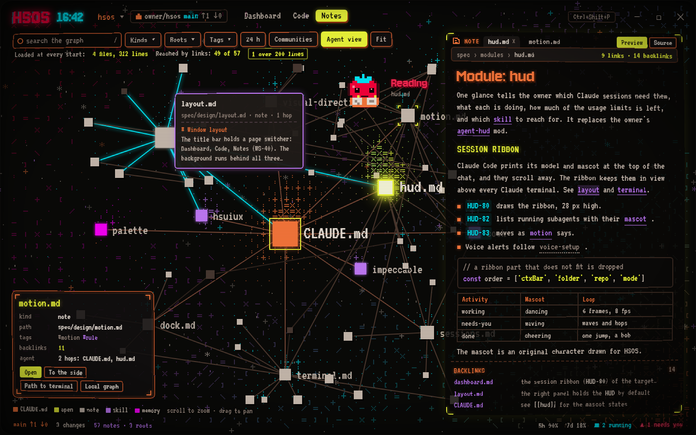

Notes page layouts, Phosphor
Three ways to lay out the Notes page with the Code page's title bar and the small strawberry, here reading. Every option shows the same moment: hud.md is open, motion.md is selected in the graph, the pointer rests on layout.md, and the agent view is on. Click a still to open it live; scroll on the graph to zoom, drag to pan.
A. Map and page
The graph floats free on the left, as on the Dashboard, with its toolbar and the agent view line above it, the details card for the selected note in its lower corner and the hover preview beside the pointer. The open note is a framed sheet on the right with its backlinks at the foot.

B. Reader
Reading first. A notes list on the left, the note as a wide centre column, and on the right the local graph around the open note (depth 2) with the backlinks under it. The full graph is one press away.

C. Open air
Matches the Code page you chose. The graph fills the whole page and runs on behind the note, which floats on the right framed only by corner brackets and see-through, so the graph's light shows behind the text. The toolbar, details card and hover preview float over the graph.
